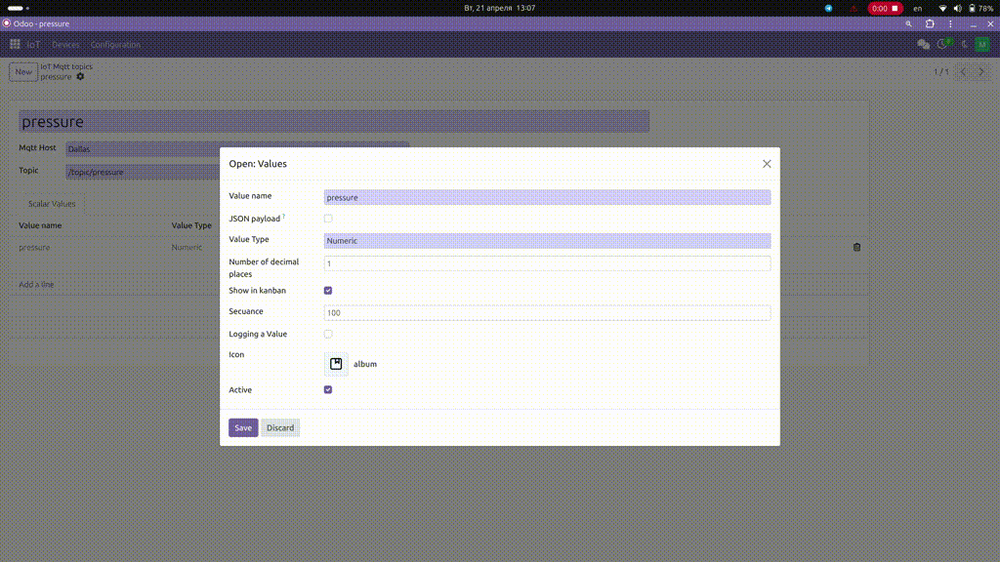

This module provides a custom field type for Odoo that allows users to select icons from the Lucide icon set. The Lucide icon set is a collection of over 1,000 open-source icons that are designed to be simple, consistent, and easy to use.
lucide_icon that can be used in Odoo models.To use the lucide_icon field type in your Odoo model, you can add the following code to your model definition:
lucide_icon = fields.Char(string='Lucide Icon', widget='lucide_icon')
html = f'<i class="icon-{self.lucide_icon}"></i>'
<i
t-att-class="'icon-' + record.lucide_icon"
></i>
<filed name="lucide_icon" widget="lucide_icon"/>

This module is licensed under the LGPL-3.0 license.